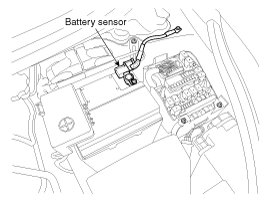

ISG (Idle Stop & Go) System
Description
Vehicles have many control units that use more electricity. These units control their own system based on information from diverse sensors. It is important to have a stable power supply as there diverse sensors giving a variety of information. Battery sensor (A) is mounted on battery (-) terminal. It transmits battery voltage, current, temperature information to ECM. ECM controls generating voltage by duty cycle based on these signals.

CAUTION:
When battery sensor signal fault occurs, inspect the vehicle parasitic draw in advance after inspecting the sensor because the sensor will behave abnormally when the parasitic draw is more than 100mA.
NOTE:
It takes a few hours for a new battery sensor to detect the battery state correctly.
Perform the following process after replacing the battery sensor.
1. Ignition switch ON/OFF.
2. Park the vehicle about 4 hours.
3. After 4 hours later, check that the SOC (State of charge) of battery is displayed on GDS properly.
4. After engine start ON/OFF 2 times or more, check the SOF (State of function) of battery using GDS.
CAUTION:
For the vehicle equipped with a battery sensor, be careful not to damage the battery sensor when the battery is replaced or recharged.
- When replacing the battery, it should be same one (type, capacity and brand) that is originally installed on your vehicle. If a battery of a different type is replaced, the battery sensor may recognize the battery to be abnormal.
- When installing the ground cable on the negative post of battery, tighten the clamp with specified torque of 4.0 - 6.0 N.m (0.4 - 0.6 kgf.m, 3.0 - 4.4 lb-ft). An excessive tightening torque can damage the PCB internal circuit and the battery terminal.
- When recharging the battery, ground the negative terminal of the booster battery to the vehicle body.
NOTE:
- Refer to DTC manual code "U1111, U1112" to inspect the battery sensor.
- Must replace the engine wiring assembly to replace the battery sensor. Battery sensor doesn't be replaced as a part only.